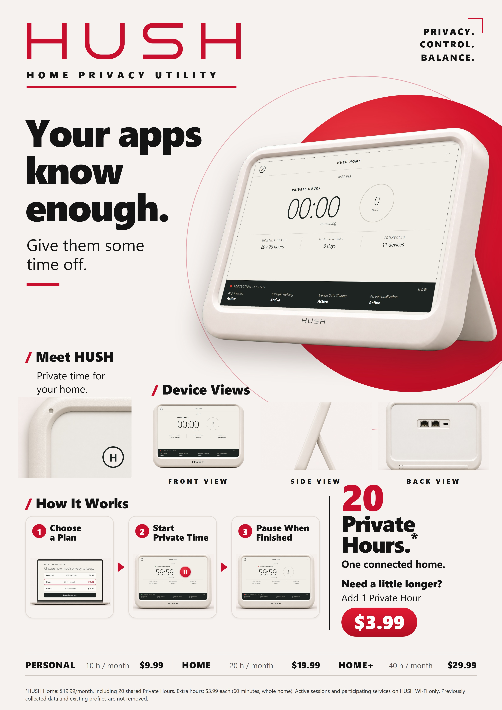
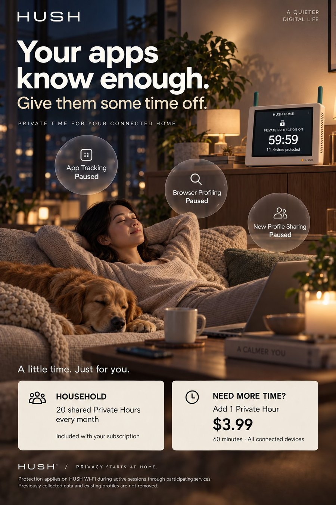
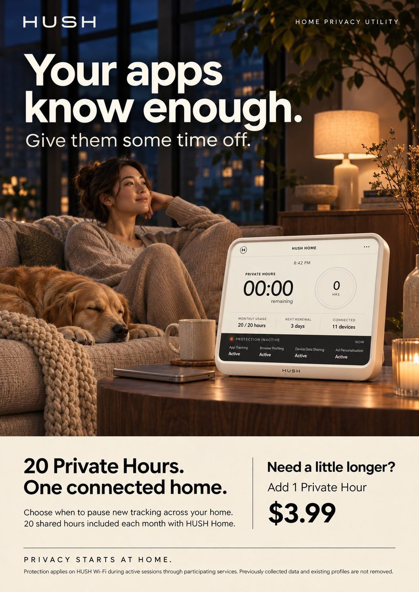
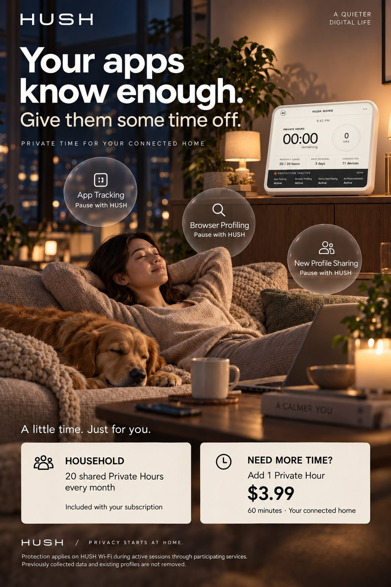
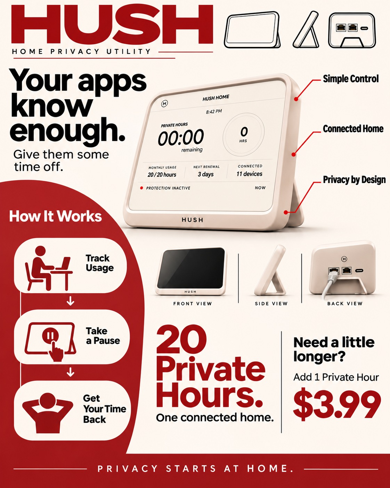
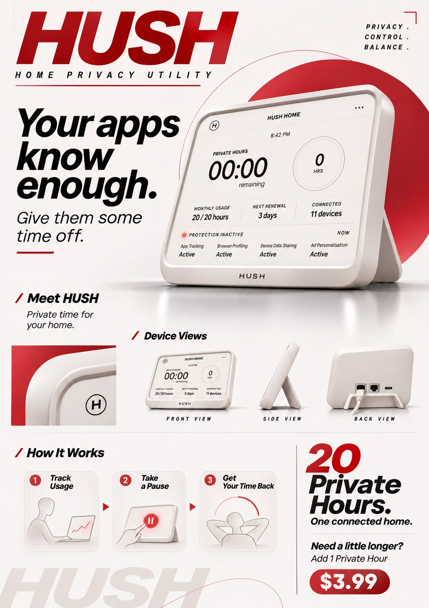
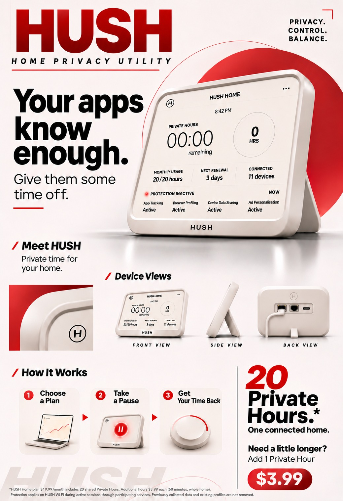
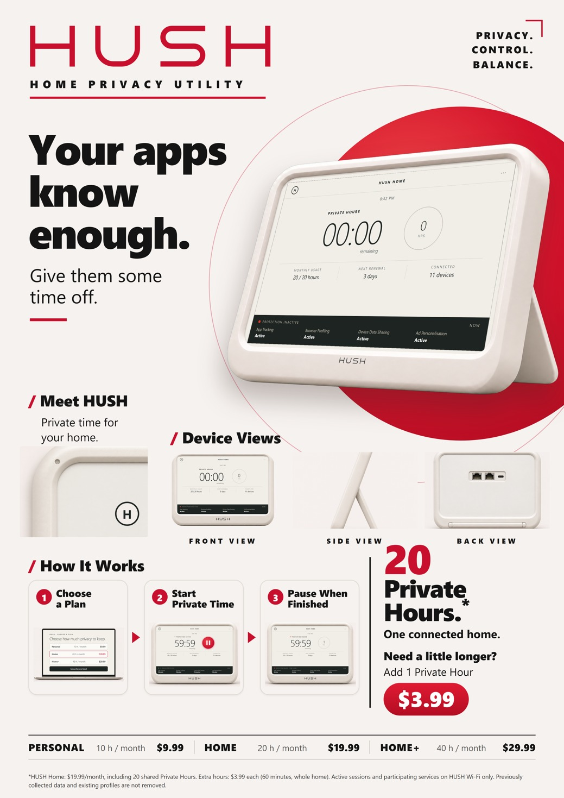

A full-page insert in the 2046 home technology catalogue that comes with home and lifestyle magazines. The same artwork runs as an in-store poster beside the router shelf at electronics retailers. It sells HUSH the way routers and meal kits are sold today: cheerful, practical, and with the price up front.
The hero device is shown at 00:00, with "Protection inactive" and every category Active. The ad treats running out as normal, even friendly: "Need a little longer? Add 1 Private Hour, $3.99." The three steps read Choose a Plan → Start Private Time → Pause When Finished. In the ad, privacy is something you switch on for a while, not something you live in. A plan strip along the bottom puts all three tiers side by side, like a phone contract.
*HUSH Home: $19.99/month, including 20 shared Private Hours. Extra hours: $3.99 each (60 minutes, whole home). Active sessions and participating services on HUSH Wi-Fi only. Previously collected data and existing profiles are not removed.
The asterisk on "20 Private Hours" carries the critique: the hours are shared, they depend on other companies taking part, and they cannot undo the past. Every number matches the interface and the quick-start guide.



Jinge sketched the layout. Three turning points:
v2 · first AI version. Silhouette steps, product hero, ethernet ports on the back.
v3 · new layout. Rebuilt on Jinge's sketch: hero device, device views, How It Works, offer.
v5c · refined. 3D steps instead of hand-drawn, upright type, "Choose a Plan", fine print, clear back view.
Final · team layout, rebuilt sharp. Follows the team's red-and-white vector layout (new steps, plan strip, fine print). Every product image was generated separately and every screen and word set in real type, so it stays crisp in print.




We don't answer these. The artefacts are built so that visitors reach them by using the device, not by reading a statement.
The Pause button is the most responsible-feeling control on the device, and it is also the one that switches tracking back on. The scenario turns on that moment.
A job search, a health question, a relationship, a late-night worry. Once privacy has a price, people start ranking their own lives by it. The guide even teaches how.
One person's private moment spends everyone's allowance. Keep me private and Step out are polite settings for an argument the household will have anyway.
Personal, Home and Home+ turn privacy into a tier. Households that are already stretched will be tracked the most, and the report will show it as a number that grows each month.
Only the future. Every plan page and the fine print say it plainly: previously collected data is not removed. Privacy becomes something you can only buy in advance.
HUSH keeps the start and end time of every session "for billing and service improvement". A log of when a household wanted privacy may say more than the searches would.
APA 7th edition. All sources were published between November 2025 and August 2026, and each was opened and checked on 7 November 2026. Settlements and consumer-group findings are reported as allegations, not court findings.
BEUC. (2026, March 17). Meta's latest consent-for-ads model still unlawful according to consumer groups' analysis [Press release]. https://www.beuc.eu/press-releases/metas-latest-consent-ads-model-still-unlawful-according-consumer-groups-analysis
Federal Trade Commission. (2026, January 14). FTC finalizes order settling allegations that GM and OnStar collected and sold geolocation data without consumers' informed consent [Press release]. https://www.ftc.gov/news-events/news/press-releases/2026/01/ftc-finalizes-order-settling-allegations-gm-onstar-collected-sold-geolocation-data-without-consumers
Leon, J. (2026, August 30). Anthropic's Claude Code usage cap update actually hides a quiet downgrade. Android Headlines. https://www.androidheadlines.com/2026/08/anthropic-claude-code-weekly-limits-update.html
Meta. (2025, September 26). Facebook and Instagram to offer subscription for no ads in the UK. Meta Newsroom. https://about.fb.com/news/2025/09/facebook-and-instagram-to-offer-subscription-for-no-ads-in-the-uk/
New York State Senate. (2026, June 4). Senate Bill S9348: An act to amend the general business law, in relation to prohibiting motor vehicle manufacturers and dealers from charging a subscription fee for certain functions of a motor vehicle after the vehicle is sold [Legislation, 2025–2026 session]. https://www.nysenate.gov/legislation/bills/2025/S9348/amendment/original
O'Kane, S. (2026, January 14). Tesla will only offer subscriptions for Full Self-Driving (Supervised) going forward. TechCrunch. https://techcrunch.com/2026/01/14/tesla-will-only-offer-subscriptions-for-full-self-driving-supervised-going-forward/
Office of the Texas Attorney General. (2026, May 11). Attorney General Ken Paxton secures major agreement with LG to protect Texans' privacy and stop data from being collected without their knowledge [Press release]. https://www.texasattorneygeneral.gov/news/releases/attorney-general-ken-paxton-secures-major-agreement-lg-protect-texans-privacy-and-stop-data-being
Sharma, A. (2026, June 17). Google to use UK and EU user IP addresses for ad personalization. BleepingComputer. https://www.bleepingcomputer.com/news/security/google-to-use-uk-and-eu-user-ip-addresses-for-ad-personalization/
Smalley, S. (2026, February 27). Samsung updates ACR privacy practices after Texas sues TV manufacturers. The Record from Recorded Future News. https://therecord.media/samsung-updates-acr-privacy-practices-texas
Wellauer, K., & Flanders, K. (2025, November 3). Prepaid electricity consumers sweltering under regular disconnections, report finds. ABC News. https://www.abc.net.au/news/2025-11-03/first-nations-right-to-power/105941906
"UNLIMITED: Visitors from 2046". Archived Week 11 presentation, included unchanged as presented. Earlier visual designs, pricing (Personal $14.99, Household $29.99 for 80 h, Unlimited $59.99) and story are retained as originally shown. The earlier pages of this document record the revised final artefacts and rules, and they take precedence where the two differ.